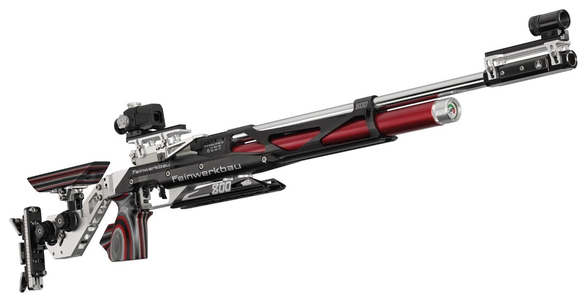
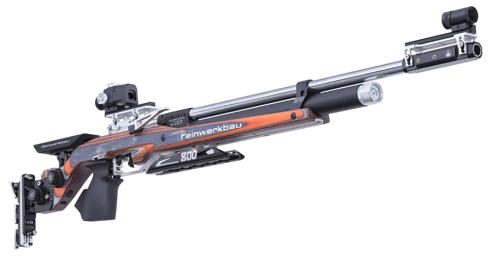
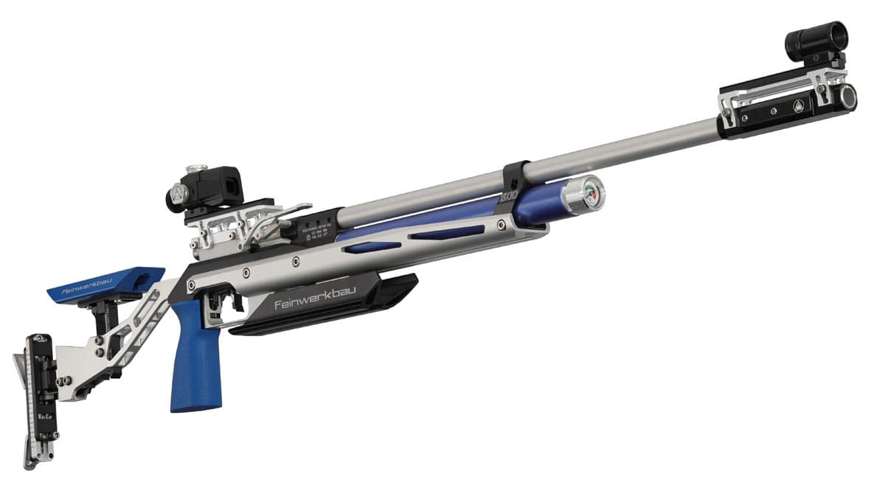
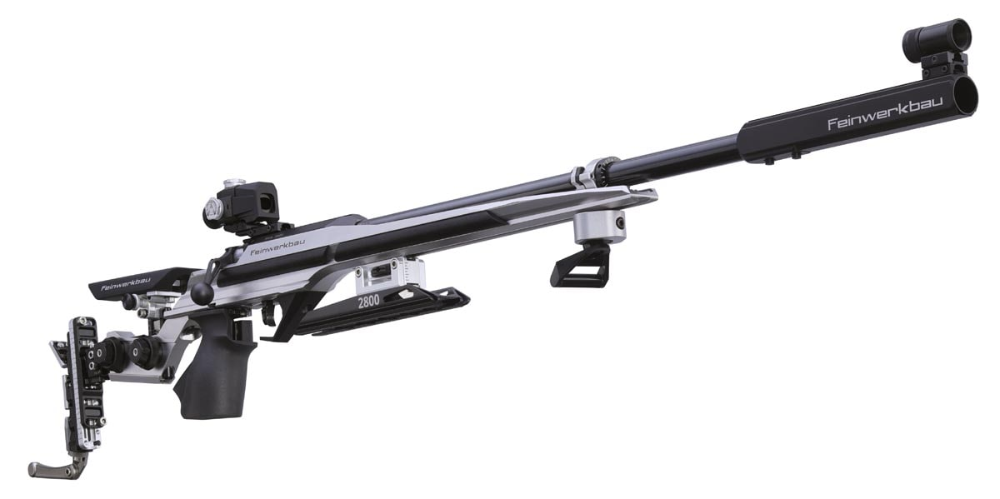
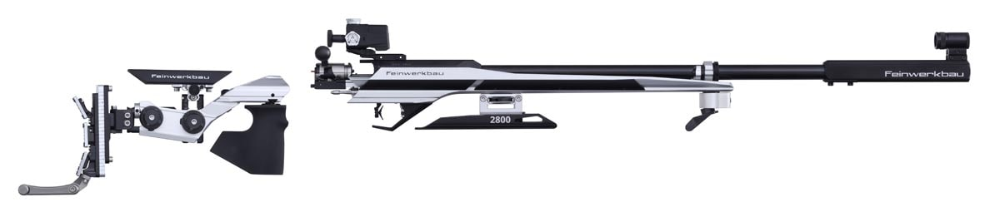
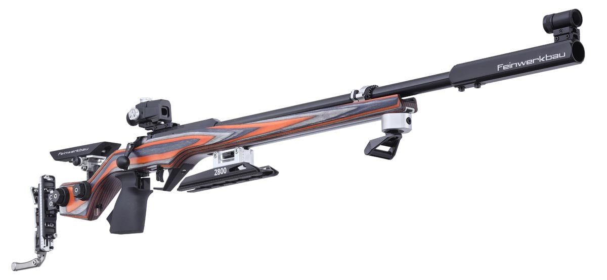
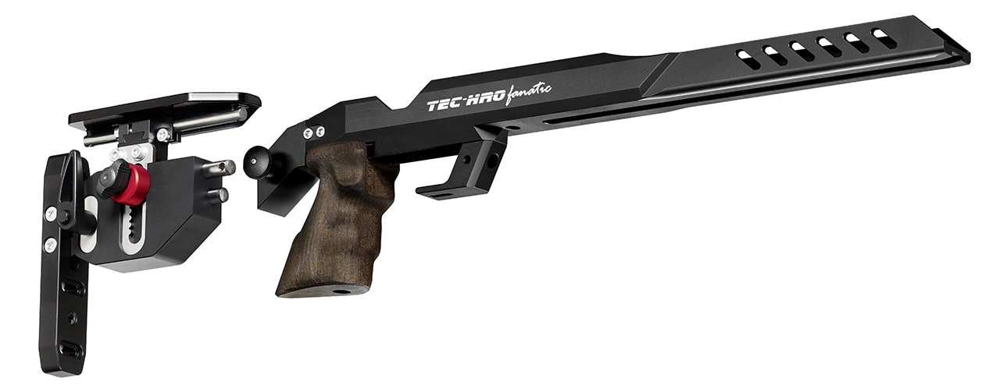
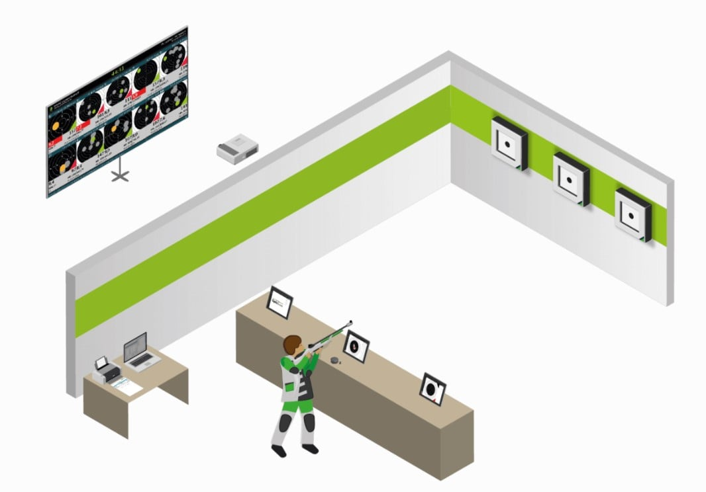
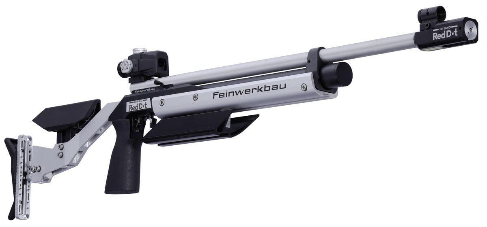
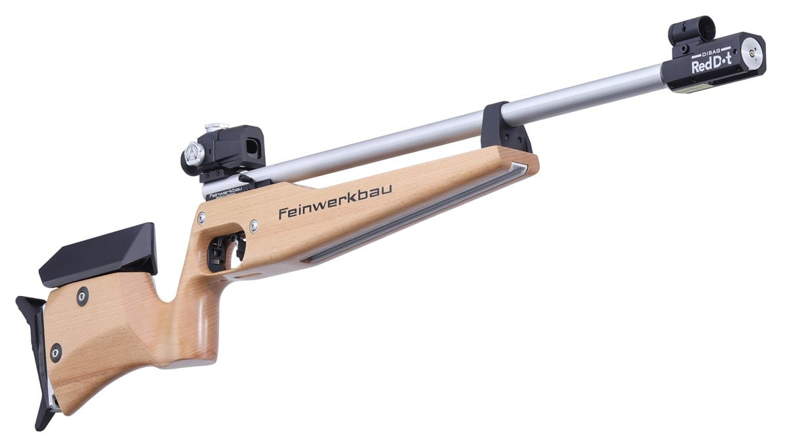

Gewehr
(mehr ...)
Luftgewehr:
Wie in jeder Sportart bildet das Sportgerät die Basis zu deinem Erfolg. Für das Sportschießen mit dem Luftgewehr ist darauf zu achten, dass die Einstellungen des Gewehrs individuell auf dich angepasst werden können. Um das Gewehr auf dich einzustellen ist eine zweite Person, die deinen Stand von außen betrachtet und Fotos zum Abgleich macht, sehr hilfreich. Im Schüler und Jugendbereich kannst du mit dem Luftgewehr auch Dreistellungsdisziplinen schießen. Dann solltest du darauf achten, dass das Umbauen möglichst einfach und schnell funktioniert. Notiere dir die Umbaueinstellungen unbedingt in der shoot report Stammdatenfunktion, damit du sie immer zur Hand hast.
TIPP:
Als High-End-Gewehr in Bezug auf die Einstellungen auf den Schützen, gilt das Luftgewehr-Model „800 X“ von Feinwerkbau. In puncto Schussleistung, Qualität, Funktionalität und Design zählt dieses Match-Gewehr zur absoluten Spitzenklasse. Optisch entspricht das 800 X durch seine formschöne Ausgestaltung der typisch markanten Feinwerkbau-Linie.
TIPP:
Neben der klassischen Aluschaft-Variante des Luftgewehrs, gibt es auch Modelle mit Vollholzschaft. Zum Beispiel die Modelvariante „800 W Hybrid“ von Feinwerkbau. Der Holzschaft ist aus ergonomisch geformtem Vollholz. Das Model 800 W Hybrid bietet neben den vielen Verstellmöglichkeiten auch den Vorteil, ohne langes Umbauen sowohl in Auflage-, als auch Freihand-Disziplinen verwendet werden zu können.
TIPP:
Als ein hervorragendes Jugendgewehr gilt unter anderem die Modelvariante „800 Evolution TOP” von Feinwerkbau. Mit der 4X4 Varo Visierlinienerhöhung kann die Visierung mühelos an die ständig veränderte Kopfposition ergonomisch angepasst werden. Die universelle Ausführung und der Rechts-Links-Griff bietet gerade in der Arbeit mit den Nachwuchsschützen viele Vorteile– und das nicht nur für Schützenvereine.
Kleinkaliber Gewehr:
Wie in jeder Sportart bildet das Sportgerät die Basis zu deinem Erfolg. Für das Sportschießen mit dem Kleinkaliber Gewehr ist darauf zu achten, dass die Einstellungen des Gewehrs individuell auf dich angepasst werden können. Durch die Dreistellungsdisziplinen solltest du darauf achten, dass das Umbauen möglichst einfach und schnell funktioniert. Notiere dir die Umbaueinstellungen unbedingt in der shoot report Stammdatenfunktion, damit du sie immer zur Hand hast. Um das Gewehr auf dich einzustellen ist eine zweite Person, die deinen Stand von außen betrachtet und Fotos zum Abgleich macht, sehr hilfreich.
TIPP:
Im Bereich der Kleinkaliber Matchgewehre ist besonders ein Modell zu empfehlen: „Alu 2800“ von Feinwerkbau. Mit dem Aluschaft bietet dir das Kleinkalibergewehr „2800 Alu“ viele Einstellungsmöglichkeiten, damit du das Gewehreinfach und schnell an deine Bedürfnisse anpassen kannst. Mit dem Dämpferring kannst du das Schussverhalten noch mehr auf Deine Bedürfnisse anpassen. Zudem wurde das Ladefenster des revolutionären Präzisionsverschluss deutlich nach hinten verlagert, um noch mehr Komfort für den Schützen zu schaffen, was ein wesentlicher Vorteil für den Dreistellungskamp ist.
TIPP:
Speziell für die Anforderungen im dynamischen Dreistellungskampf hat Feinwerkbau die Modellvariante „2800 Alu X-Change“ entwickelt. Mit einem Schnellverschluss kann die hintere Schafteinheit mit Griff, Schaftbacke und Schaftkappe in einem Stück abgetrennt werden. Beim Wechsel der Schießposition kann eine andere Einheit mit entsprechend voreingestellten Schaftkomponenten blitzschnell montiert werden und die Vorbereitungszeit im Finale kann für mehr Probeschüsse genutzt werden.
TIPP:
Neben der klassischen Aluschaft-Variante des Kleinkalibergewehrs, gibt es auch Vollholzschaft-Modelle auf dem Markt. Zum Beispiel das Model „2800 W“ von Feinwerkbau. Dieses ist mit einem Schaft aus Nussbaumholz oder aus hochwertigem Schichtholz erhältlich. Mit den vielen Einstellmöglichkeiten ist der Holzschaft nicht nur optisch ein Highlight auf dem Markt. Auch mit dieser Modelvariante nimmst du über den Dämpferring Einfluss auf des Schussverhalten und kannst dieses individuell anpassen. Zudem wurde auch hier das Ladefenster des revolutionären Präzessionsverschluss deutlich nach hinten verlagert, um noch mehr Komfort für den Schützen zu schaffen.
Kleinkalibergewehr Wechsel-Schaft:
Neben einer Neuanschaffung eines Kleinkaliber-Gewehrs gibt es die Möglichkeit dein System mit einem Wechsel-Schaft aufzurüsten. Eine Modernisierung deines Schaftes bietet dir oftmals viele Möglichkeiten in deinen individuellen Einstellungen mit deinem gewohnten System. Achte bei der Auswahl deines Gewehr Wechsel-Schaftes darauf, dass du alle Einstellungen individuell auf dich anpassen kannst und du dich mit dem neunen Schaft wohl fühlst. Notiere dir die Umbaueinstellungen unbedingt in der shoot report Stammdatenfunktion, damit du sie immer zur Hand hast.
TIPP:
Der Gewehr-Wechsel-Schaft „TEC-HRO fanatic“ von TEC-HRO ist besonders geeignet, um z.B. im Dreistellungskampf schnell verschiedene Einstellungen zwischen den Anschlägen vorzunehmen. Die Möglichkeit, mittels schwingungs-dämpfenden Adaptern nahezu jedes System in diesen Schaft zu integrieren, bietet einen enormen Mehrwert gegenüber herkömmlichen Schäften.
Schießanlage:
Mit deinem idealen Sportgerät solltest du optimale Bedingungen am Schießstand nutzen. Neben einer guten Beleuchtung steht hier die Schießanlage im Vordergrund. Ob mit der Scheibenzuganlage oder einer elektronischen Anlage mit digitaler Trefferanzeige, gehört das Einrichten auf die Scheibe, für dich, zu einem wichtigen Schritt in deinem Ablauf. Moderne Schießanlagen mit digitaler Trefferanzeige bieten dir als Schützen einen absoluten Mehrwert. So siehst du deinen präzisen ausgewerteten Schuss nur kurze Zeit nach der Abgabe bereits auf deinem Tablet oder Monitor in Zehntelwertung. Hilfreich ist dies, wenn du dein Gefühl im Moment der Schussabgabe sofort mit deinem erzielten Ergebnis abgleichen möchtest, um in einen „Flow“ zu kommen oder du Anschlagskorrekturen durchführen möchtest. Achte jedoch bei jedem Schuss auf deine Nachzielphase. Diese solltest du besonders mit einer digitalen Trefferanzeige sehr sorgfältig durchführen. Auch im Wettkampf bieten die Anlagen, mit der Hochrechnungsfunktion und der Visualisierung auf dem Schießstand und im Gastraum, für dich und alle deine Zuschauer, sehr viel Spaß und spannende Momente. Für das Training, sowohl im Jugend- als auch im Erwachsenenbereich, bieten elektronische Anlagen interessante Varianten von Spaßscheiben, die als Abwechslung zum Spiegeltraining hervorragend geeignet sind und Vereinsveranstaltungen zum absoluten Highlight machen.
TIPP:
Schnellstmögliche, präzise und zuverlässige Auswertungen im Bereich der berührungslosen, optischen Schusserfassung bietet dir das „OpticScore“ System von DISAG. Mit dem Licht zahlreicher Infrarot-Leuchtdioden und einer speziell entwickelten Linse wird ein für dein Auge unsichtbarer Messlichtvorhang erzeugt. Das Geschoss wird beim Durchdringen des Messlichtvorhanges von zwei Highspeed-Sensoren erkannt und erfasst. So eignet sich dieses System für Distanzen von 10, 15 oder 50 Metern hervorragend. Viele weitere Features wie Zielbildwechsler, integriertes Ampelsystem und mehrfarbige LED-Beleuchtung sind zusätzlich erhältlich. Mit vielen verschiedenen Spaß- und Glücksscheiben bietet dir DISAG eine absolute Neuheit auf dem Markt für Schießanlagen mit digitaler Trefferanzeige.

Lichtgewehr:
Um erste Erfahrungen im Sportschießen zu sammeln gibt es die Möglichkeit des Lichtschießens. Die Besonderheit: Kinder unter 12 Jahren dürfen ohne Sondergenehmigung mit dem Lichtgewehr trainieren. Da alle Bewegungsabläufe dieselben sind wie beim Sportschießen mit dem Luftgewehr, ist dies eine großer Mehrwert für den Nachwuchsbereich.
TIPP:
Mit einer einzigartigen Lasertechnik bietet der Hersteller Feinwerkbau ein Simulator-Gewehr für das Lichtschießen für alle Sportschützen unter 12 Jahren. Im Aluminium oder Buchenholzschaft, die sowohl für Rechts- als auch Linksschützen geeignet sind, bietet der Simulator von Feinwerkbau viele Einstellungsmöglichkeiten, um die Kinder und Jugendlichen optimal an den Sport heranzuführen. Bei den verarbeiteten Komponenten – so zum Beispiel dem vollwertigen Match-Abzug - wurden hier keine Kompromisse eingegangen. Gerade bei der Arbeit mit Jugendlichen ist es wichtig, gleich von Beginn an mit hochwertigen Komponenten zu trainieren.
 